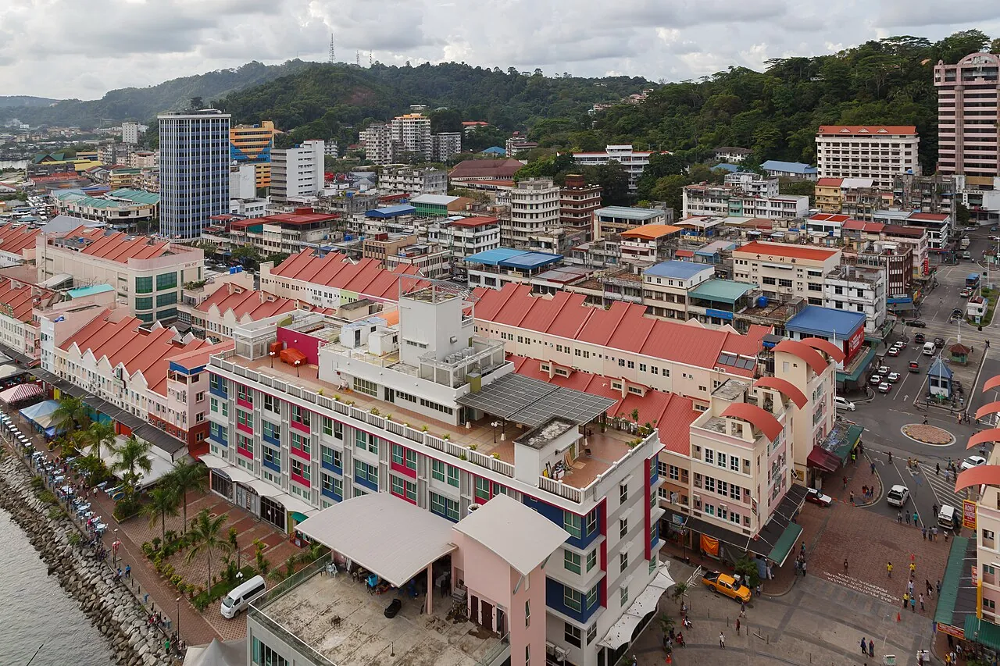
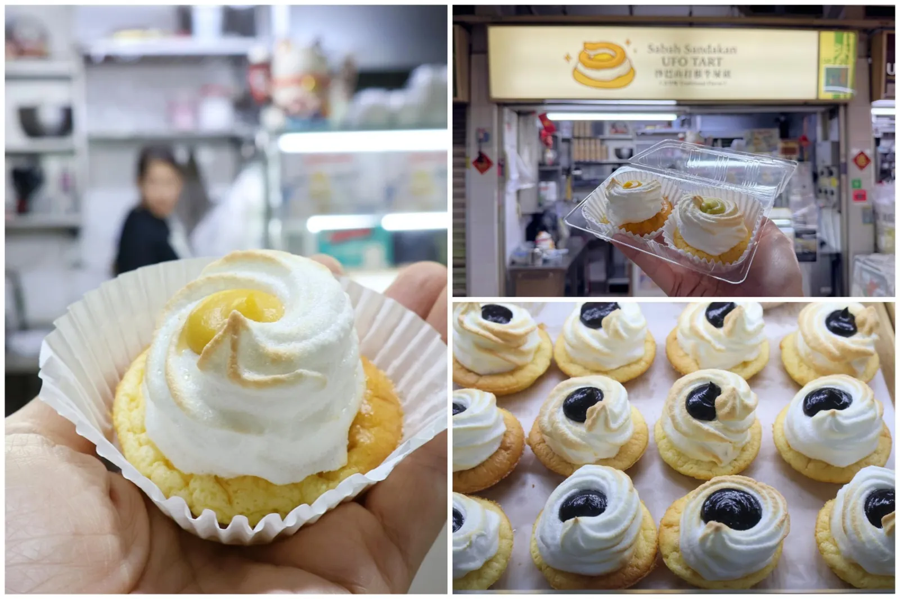
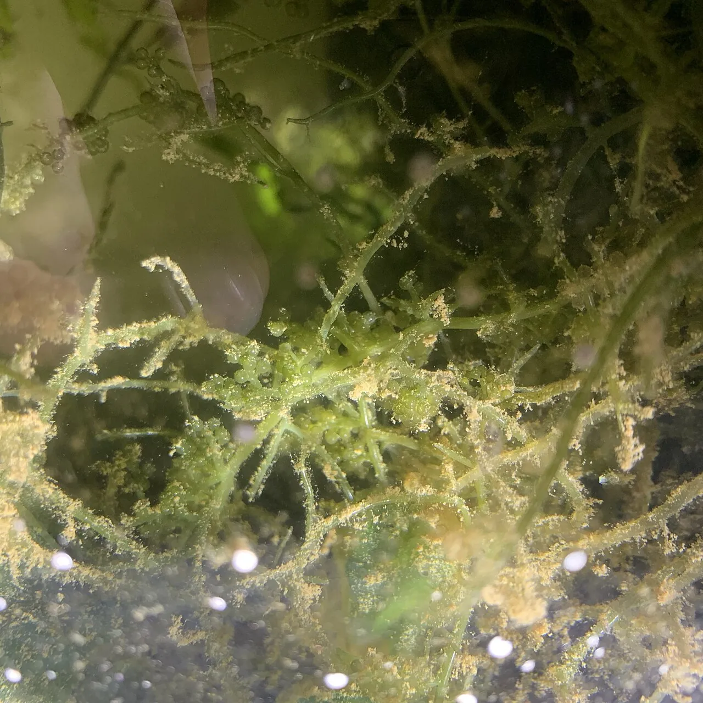
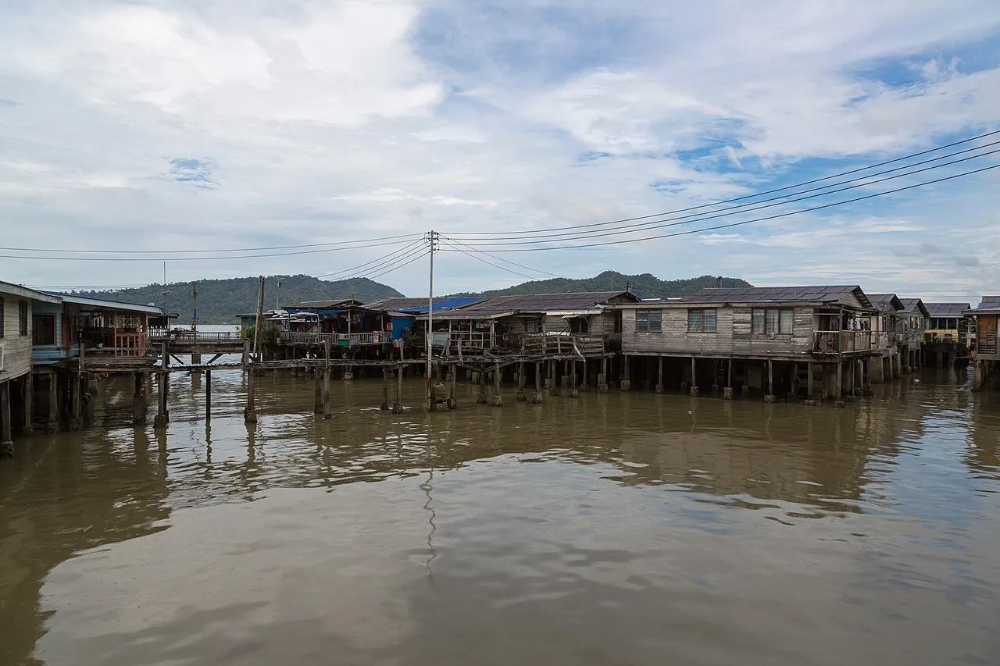
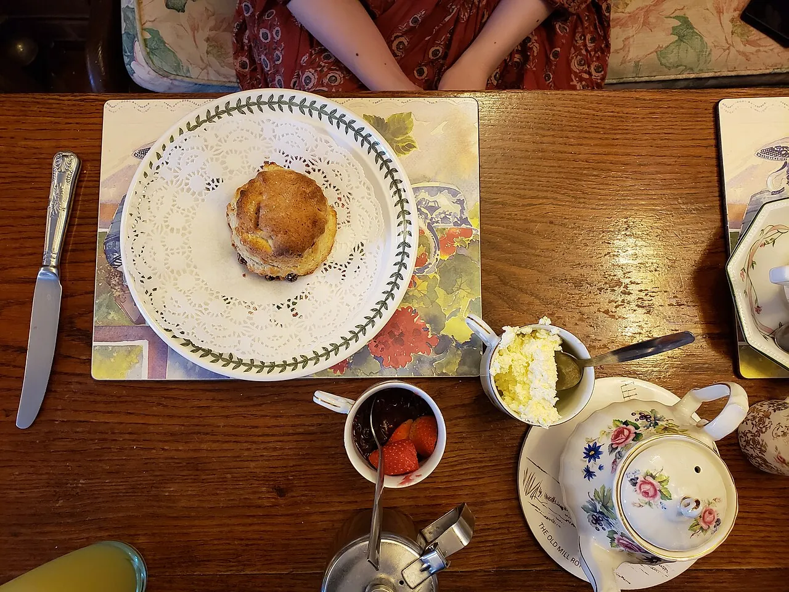
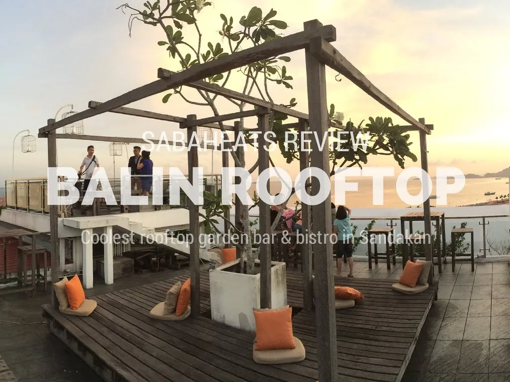

An eating catalog of Sandakan & Sepilok — where the place tells the story and the star count comes second.

Sandakan — the “Little Hong Kong of North Borneo,” whose Cantonese-merchant money built the kopitiams
The Standing Orderread first
Eat where the place tells the story. For a once-in-a-trip dinner, take a charcoal seafood table on the Sim Sim stilt-village boardwalk over the sea[3], or colonial high tea on the croquet lawn at the English Tea House[4]. For the local soul, hunt the UFO tart and a bowl of springy “Little-Hong-Kong” pork-and-fish noodles in a heritage kopitiam at breakfast[1][8]. In Sepilok, your evenings belong to one standout jungle kitchen — The Nest at Forest Edge — because choice out there is genuinely thin[5][28]. Seafood at dinner, kopitiam at breakfast, and book the no-menu fishermen's table a day ahead.
⚠ Timing & traps. Breakfast legends sell out before 10am — go early[3]. Kim Fung night market is Saturday-only; the seafront Downtown market runs Mon–Thu evenings[24]. Best window is Mar–Sep (drier); the NE monsoon Nov–Feb can chop up Sim Sim boat dining. A full local day of meals runs RM30–50 (≈ €6–11); night-market plates under RM15 (≈ €3.20)[11]. Conversions at €1 ≈ RM 4.70.
CATALOG I
The Dishes to Chase
Each entry tagged by area and placed on the touristy ↔ offbeat gauge. Hunt the dish, not the signboard.
N° 01

UFO Tart
Butter-sponge base, eggy custard, fluffy meringue “flying saucer” — a 1955 accident by Hainanese baker Fu Ah On who over-baked his tarts. Locals call it the “cow-dung tart.”[1][2]
Hunt it atSan Da Gen · Wing Hup Lee · Gold Crown · Bun Hock
Charcoal-grilled fish, stingray or clams with sambal — the fish “already half fried and grilled when an order is made.” Eaten over the water at dusk.[16]
Hunt it atSim Sim village · Pasir Putih
Waterfront / offbeat
touristyoffbeat
N° 08

Latok (Sea Grapes)
Crunchy “caviar of the sea” seaweed that pops between the teeth — one of South-East Asia's oddest, most addictive textures.[11]
Hunt it atPasar Tamu weekend market
Market / offbeat
touristyoffbeat
Also keep the pencil out for:fish-paste noodles (noodles made from fish — clear, curry, prawn or Hakka style — at Kedai Makan Kong Teck, Mile 7)[8]; coconut pudding set with coconut milk and served in a real shell at Kedai Makan Ngee Lee[2]; and avocado sticky rice / cake — Sandakan grows great avocado, the milky-sweet local answer to mango sticky rice — at Soul Sweet, Urban Café or Crowd 99[9].
CATALOG II
Tables with a Story
Four rooms where the setting is the meal: a stilt village over the sea, a no-menu fishermen's table, a colonial lawn, and a rooftop sundowner.

Sim Sim Water Village
◦ offbeat ◦ ~3 km E of centre · eat over the sea
The original townsite of Sandakan (founded 1879): hundreds of wooden stilt houses on the sea, linked by century-old plank walkways. The famous eating is on Bridges 7 and 8.[17][3]
Kau Kee (九记), G68, Bridge 7 — iconic spring noodle & century-egg dumpling; 6–11am daily, sells out before 10am. Sim-Sim 88 Seafood (森森), Bridge 8 — steamed fish, butter prawns, fried baby squid; “they don't even need to use MSG.” Chef Ah Kit insists on the freshest catch, so pre-order helps.[3][13]
⊠ ✦ ⊠
Persatuan Perikanan Sandakan — the No-Menu Legend
◦ offbeat ◦ town · reserve ahead
A four-table, no-menu room at the Fishermen's Association: you eat whatever was freshest off the boats that day, and “all you need to do is to say yes to all of them.” The single most “Sandakan” dinner you can book — and you must book it.[9][10]

English Tea House & Restaurant
◦ touristy (worth it) ◦ town hill · colonial high tea
Set in restored colonial Newlands, beside the home of writer Agnes Newton Keith (Land Below the Wind, 1939) — sprawling green lawns and a croquet lawn over Sandakan Bay and the Sulu Sea.[4]
High tea, scones and the colonial-garden setting are the draw — food is “mixed to positive,” the view and atmosphere are the reason to come. Expect “a single scone larger than the palm of your hand and a pot of tea.”[22][2]

Ba Lin Roof Garden
◦ mixed ◦ town · sundowner with a view
Sandakan's only rooftop garden bar-bistro, on top of NAK Hotel, looking over the bay; western comfort food (burgers, pizza, pasta), cocktails and a late dessert menu.[23][9]
Come for the sunset over the bay, not a culinary pilgrimage.
CATALOG III
Seafood with Salt in the Air
The in-town and over-the-water seafood floors — pick your tank, order the butter prawns.
Waterside seafood option in the Harbour-Mall orbit — another over-the-water table on the Sim Sim side.[34]
Waterfront / mixed
CATALOG IV
Markets & Street Food
Three floors of central market, a Saturday-only carnival, and a seawall lined with stalls. Mind the days.
Sandakan Central Market (Pasar Umum)Three floors; chase the seafood-noodle and the “original homemade kueh teow with deep-fried pork” stall (Level 3, since 1940); 5–11am. Waterfront / touristy-but-real.[10][36]
Kim Fung Night MarketSaturday only, 5–10pm, ~6.5 km out; “hundreds of makeshift stalls” of Chinese + halal street food, lion/fish dance from 8pm — “an authentic local market, not a tourist destination.” Offbeat.[24]
Sanda'Gen Downtown Night MarketOn the seawall at Coastal Road (Tembok Bandar), ~36 food stalls, breezy seafront eating, evenings Mon–Thu. Seafront / offbeat.[37]
Sejati Walk Night Market (Mile 7)Thu–Sun 4–11pm; nasi kerabu, laksa Penang, satay, apam balik, murtabak; easy parking. Local.[2]
Pasar Kim Fung (Mile 4)All-day stalls: pan-fried dumplings, paus, yam puffs, tau fu fah, chicken wings. Local.[10]
Pasir Putih food courtGrilled clams (lokan bakar) over charcoal — the casual offbeat seafood snack. Local.[12]
The kopitiam round. Breakfast-to-teatime, work the heritage coffee-shops: San Da Gen (all the local favourites under one roof, next to NAK Hotel), Wing Hup Lee (thin-crust egg tart, curry laksa), Gold Crown and Bun Hock (old-school UFO tarts), Yap Syn Kee (70-yr-old grass jelly that runs out within the hour), and Ngee Lee (coconut pudding in the shell)[10][1]. UFO tarts run ~RM2.50 (≈ €0.53) each — and 5 May is Sabah's official “UFO Tart Day.”[1]
CATALOG V
Sepilok — Manage Expectations
Out at the Mile-14 orangutan cluster, “your eating venues are severely limited” and prices jump versus town. The bright spot is real.[28]
“The most interesting menu in the whole Sandakan area” — Bornean Contemporary plus western: hinava RM36 (€7.7), asam pedas oxtail RM63 (€13), Sepilok lamb curry RM48 (€10), nasi lemak burger RM31, pakis jungle fern. Pondside, lit at night, “Dining Under the Stars”; 7am–10pm. ⚠ It “always seems to have a couple of items missing” — have a plan B dish.[5][29][35]
The photo is Kafeteria Sepilok, below — the warung steps from the Orangutan Centre.
Simple jungle fare, open into the evening (Jln Rambutan, Mile 14) — the budget back-up.[26][35]
Budget
The plan: lunch near the sanctuary at Kafeteria, dinner at The Nest (reserved), and don't expect a town-grade kopitiam scene out here.[28]
River nights. Overnight on the Kinabatangan (Sukau / Bilit) and meals are buffet, included, sourced locally — simple but good, with local beer and wine. At some lodges dinner is barefoot, sarongs offered, on raised riverside tables for sundown. Atmosphere over à-la-carte; you're here for the river.[31]
Want hands-on? No dedicated Sandakan-town cooking school surfaced for 2026 — the self-guided food trail (Sim Sim → Central Market → kopitiams) is the move[36]. For a class, the best Sabah option is a Sabah Traditional Cooking Class near Kota Kinabalu (market tour + family-home cooking with “Mummy Halimah,” book a day ahead); operators like TYH Borneo also run Sabahan cooking experiences on request.[32][33]
If You Only Do Five Things
Sim Sim breakfast — spring noodle + century-egg dumpling on Bridge 7, before 10am.[3]
A UFO tart with kopi at San Da Gen or Wing Hup Lee.[1]
A view of the canonical Eat — Sandakan & Sepilok research page · part of the Atlas. Dish & place photographs from Wikimedia Commons and venue sites; food images are representative, not always shot in Sandakan.